TÒTTIMÓD
A refined digital flagship for a modern menswear label—balancing luxury, restraint and a clear path from discovery to purchase.
Visit live website- Role
- UX/UI Designer
- Duration
- 4 weeks
- Platform
- Responsive Shopify website
- Industry
- Luxury menswear
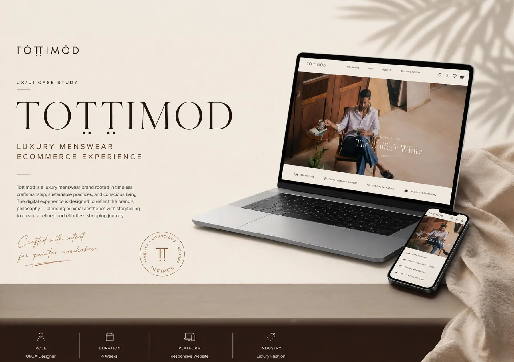
Luxury expressed through simplicity.
TOTTIMOD’s story begins in South India and is shaped by conscious materials, small-batch craft and garments designed to age with character. The digital experience needed to carry that depth without becoming heavy or overly decorative.
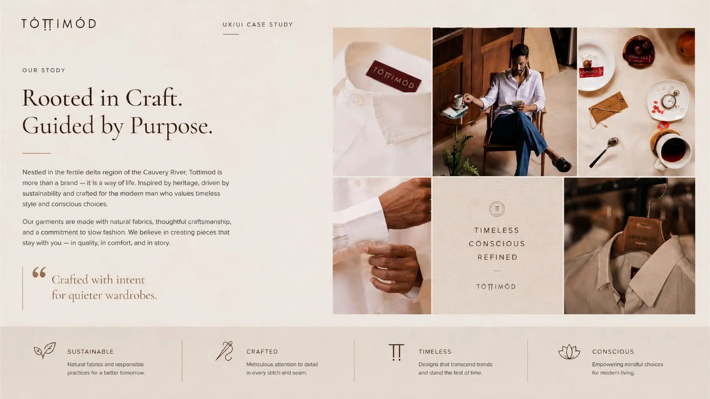
Make the product feel considered before it is touched.
The previous journey lacked a clear hierarchy, consistent brand expression and a confident mobile path. The redesign brought storytelling, product detail and conversion into one coherent system.
- Clarify brand and product value
- Reduce friction across mobile shopping
- Create reusable components for growth
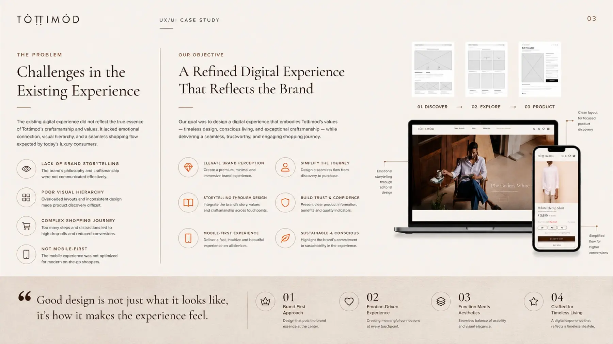
A system that makes restraint feel distinctive.
A quiet identity, warm neutral palette and highly reusable interface kit created a consistent luxury language across navigation, product cards, forms, filters and purchase actions.
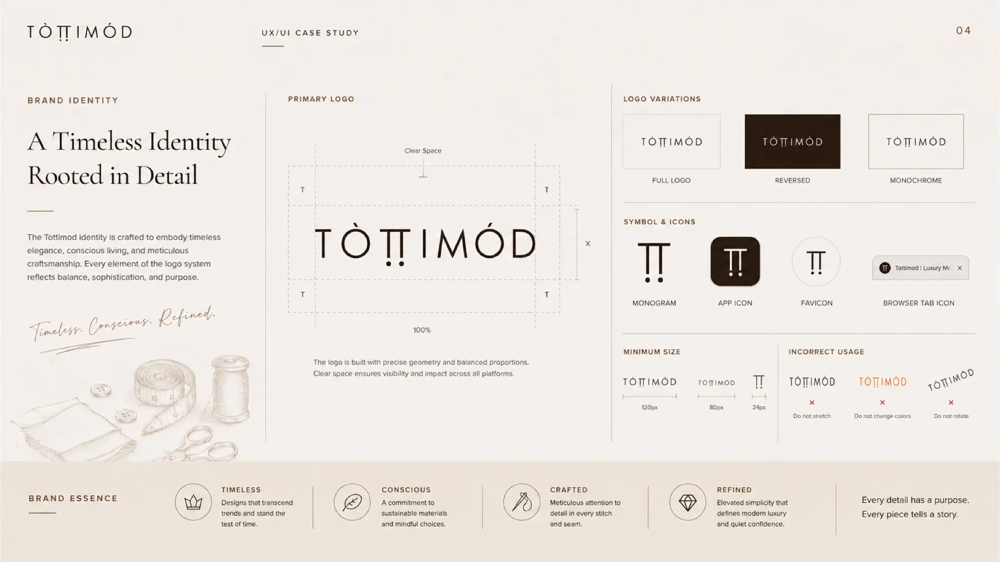
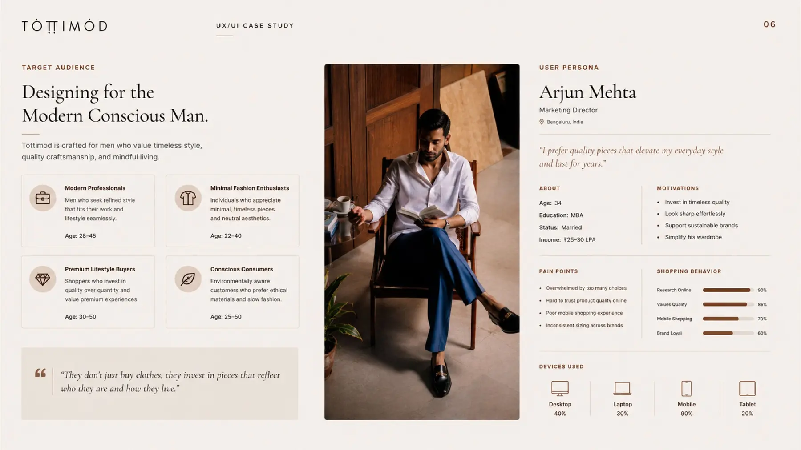
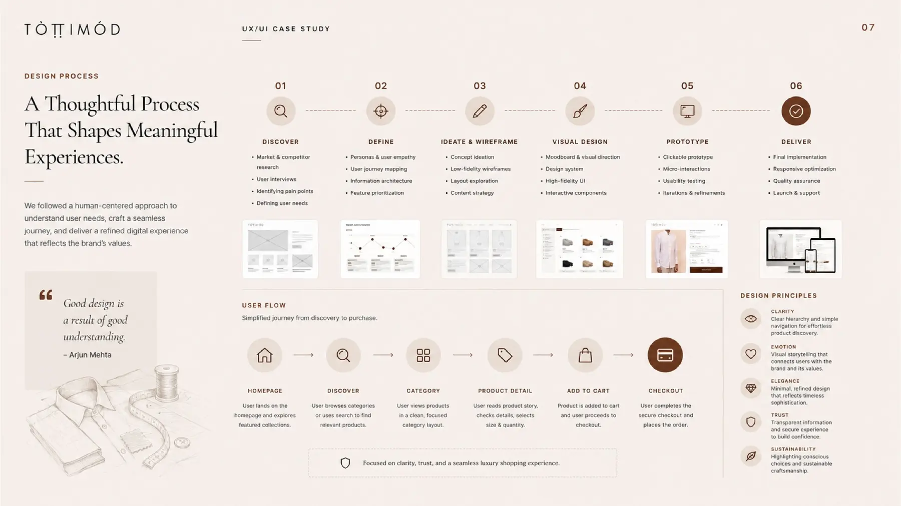
Explore the storefront system.
Switch between the core system, responsive grid and final shopping experience. The walkthrough keeps the case study focused while the live store is available in a new tab.
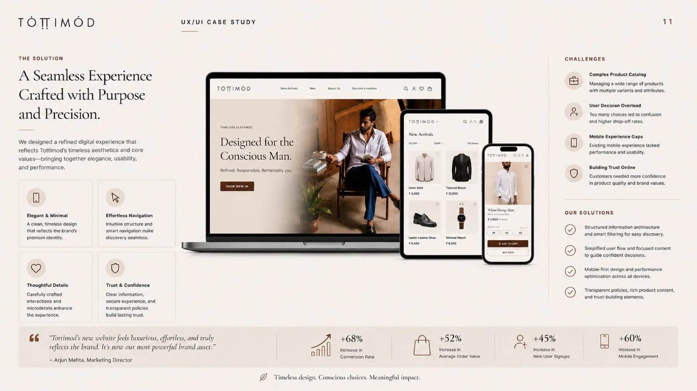
Thoughtful design.
Measurable movement.
Clearer discovery, stronger product storytelling and a mobile-first purchase journey helped the experience perform while preserving the calm, considered character of the brand.
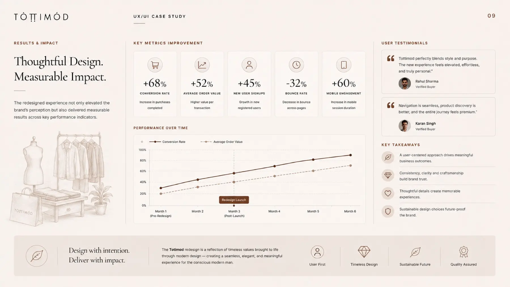
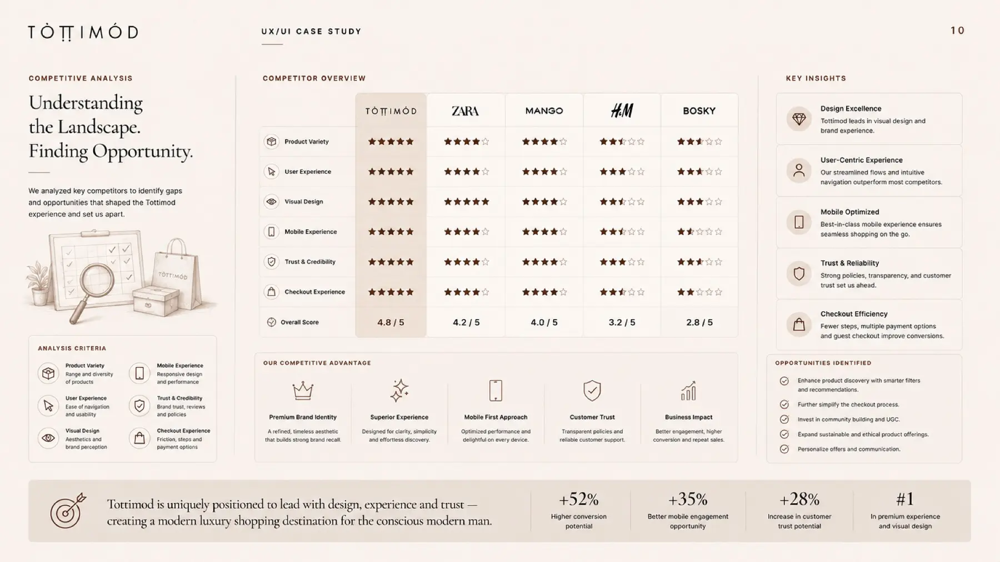
Designed as a foundation, not a finish line.
The system creates room for richer personalisation, smarter discovery and more immersive storytelling while keeping product quality and brand trust at the centre.
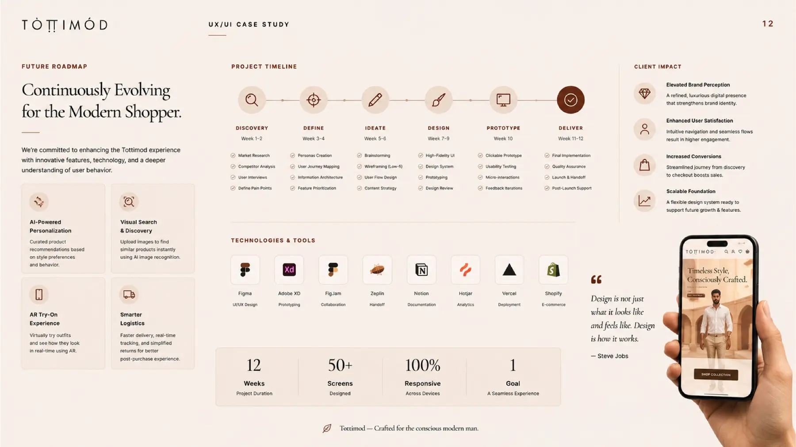
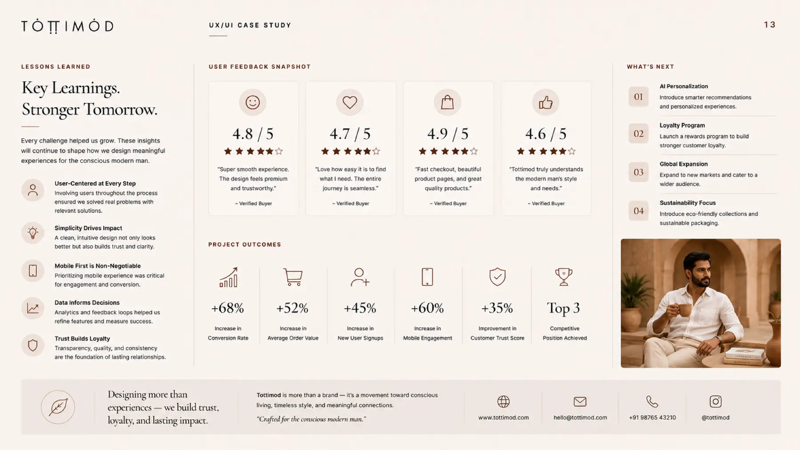
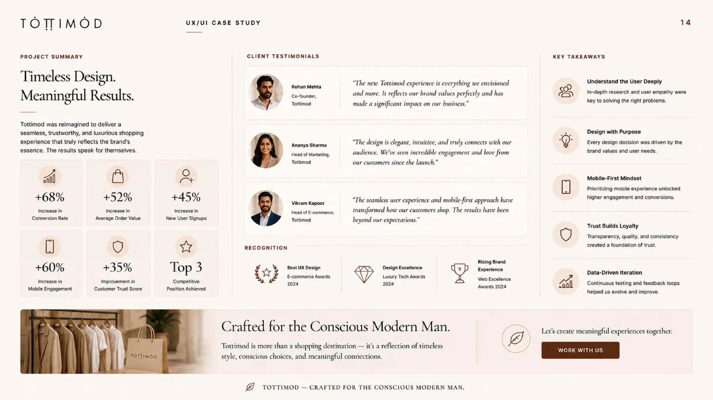
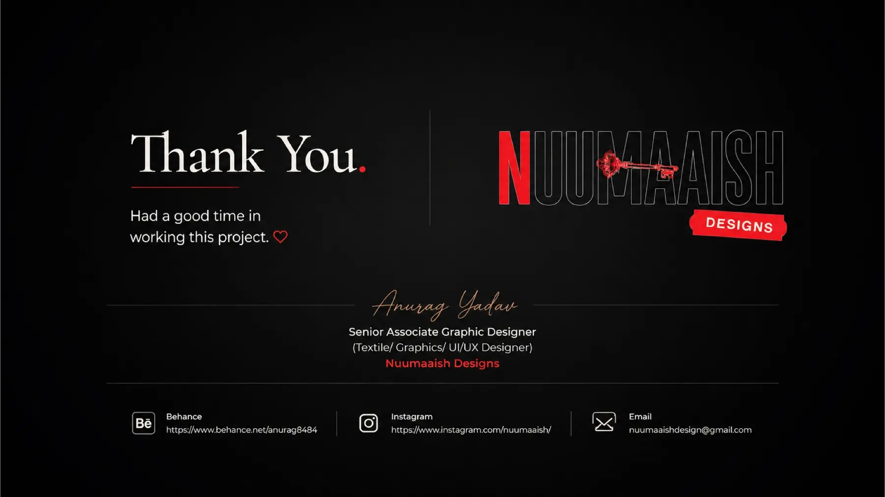